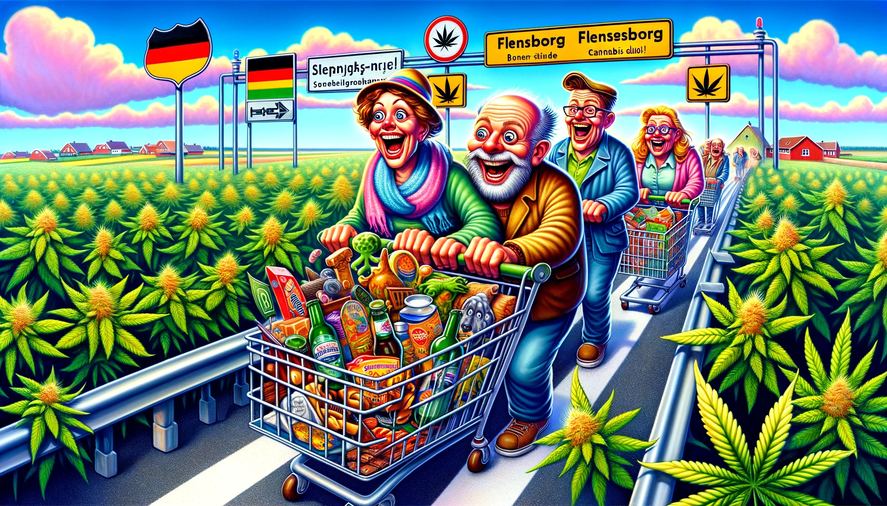

Forestil jer en verden, hvor grænsehandlen mellem Danmark og Tyskland tager en uventet drejning, og det er ikke længere de gode gamle dåsebajere eller den billige Nutella, der lokker danskerne sydpå. Nej, fra 1. april, i et skæbnesvangert twist af ironi, bliver det muligt for enhver med en smule grønne fingre og en forkærlighed for den søde duft af frihed – eller skal vi sige cannabis – at dyrke deres egne planter hjemme i stuen, helt lovligt, på tysk jord.
"Aabenraa Kommunes sundhedschef, Michael Metzsch – lad os kalde ham Michael 'Metz' for sjov – udtrykker dyb bekymring. Tænk sig, sønderjyderne, disse normalt så fredelige grænsehandlende sjæle, kunne finde på at vandre over grænsen for at forsyne sig med noget så skandaløst som cannabis. Hvor er verden på vej hen, når en tur til Flensborg kan ende med mere end blot en kasse pilsnere og en pose Haribo?
Og tænk, fra nu af vil "grænsehandel" få en helt ny betydning. Forestil jer scener, hvor sønderjyske borgmestre står med hænderne i håret (eller hvad der er tilbage af det), mens de græder over tabet af ungdommen til de forførende hash-klubber syd for grænsen. 'Tænk på børnene!', skriger de, mens visionsbilleder af hashklubber, hvor alle er venner, og cannabisplanter gror i fællesskab, danser i deres hoveder.
Og lad os ikke glemme de tyske kriminalbetjentes fagforbund, der bekymrer sig for, at denne nye, lovlige handel blot er en forklædning for mere skumle transaktioner. Forestil jer den sorgløse tyske kriminalbetjent, der pludselig må forholde sig til helt nye former for 'klubaktiviteter'.
Men vent, der er mere! Hvad med de dobbelte statsborgere, de dansk-tyske grænseryttere, som nu står med en fod i hver lejr, bogstaveligt talt? De får pludselig muligheden for at blive medlemmer af disse eksklusive cannabis-klubber, mens de stadig kan nyde en flæskestegssandwich i solen over Dannebrog.
Sundhedschefen 'Metz' fremmaner billeder af en ungdom fortabt i rusens tåger, mens han desperat forsøger at kæmpe mod internettets såkaldte eksperter, der priser cannabis til skyerne. 'Tænk på de unge!', råber han ind i voiden, mens han forbereder sig på at tage kampen op med de unge's nyfundne kærlighed til plantebaserede rusmidler.
Alt imens drømmer indehaveren af en head shop i Flensborg om en fremtid, hvor grænsehandlen ikke bare handler om øl og slik, men om at blive centrum for en helt ny form for kulturel udveksling. En fremtid, hvor 'at tage en tur over grænsen' får en helt anden – og måske mere afslappet – betydning.
Så mens vi står her på tærsklen til en ny æra af grænsehandel, kan vi kun spørge os selv: Er vi klar til den høje tid, der venter? Eller vil vi bare blive ved med at hænge fast i fortidens dåsebajere og billige chokolade, uvidende om de grønne horisonter, der venter lige over grænsen?